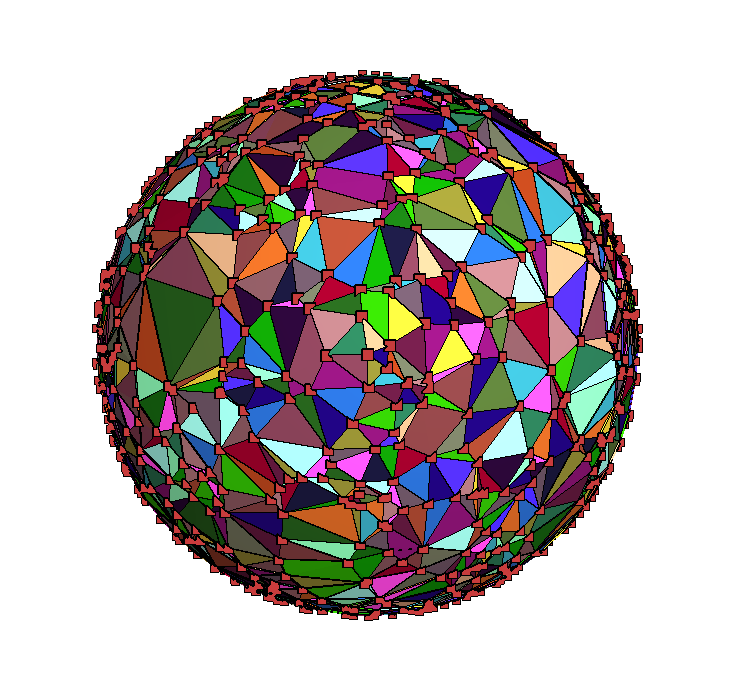

Loading...
Searching...
No Matches
CDT-plusplus
Quantize spacetime on your laptop.



7 timeslices 27528 simplices
Maintenance status
CDT++ v1.0.0-rc1 is the release candidate for the final C++23 release, v1.0.0, after which this repository will be archived. It is maintained as an independent scientific reference and regression oracle for causal-triangulations, the supported Rust successor. New C++ work is limited to correctness, reproducibility, cross-implementation validation, the complete supported 2+1D move set, and the final release contract tracked by issue #90.
Table of contents
- CDT-plusplus
- Maintenance statusMaintenance status
- IntroductionIntroduction
- Regression-oracle scopeRegression-oracle scope
- RoadmapRoadmap
- QuickstartQuickstart
- Current reference-suite statusCurrent reference-suite status
- SetupSetup
- PrerequisitesPrerequisites
- Developer workflowDeveloper workflow
- vcpkg maintenancevcpkg maintenance
- BuildBuild
- Project LayoutProject Layout
- RunRun
- UsageUsage
- DocumentationDocumentation
- Citing CDT++Citing CDT++
- TestingTesting
- Static AnalysisStatic Analysis
- SanitizersSanitizers
- Optimizing ParametersOptimizing Parameters
- VisualizationVisualization
- ContributingContributing
- IssuesIssues
Introduction
For an introduction to Causal Dynamical Triangulations, including the foundations and recent results, please see the wiki.
Causal Dynamical TriangulationsCausal Dynamical Triangulations in C++ uses the Computational Geometry Algorithms LibraryComputational Geometry Algorithms Library, Boost, and TBB. Arbitrary-precision numbers and functions are by MPFR and GMP. Melissa E. O'Neill's Permuted Congruential GeneratorsMelissa E. O'Neill's Permuted Congruential Generators library provides high-quality RNGs that pass L'Ecuyer's TestU01 statistical tests. doctest provides BDD/TDD. vcpkg provides library management and building. Doxygen provides automated document generation. {fmt} provides a safe and fast alternative to iostream. spdlog provides fast, multithreaded logging. CometML provides experiment tracking for the optional Python workflows.
Regression-oracle scope
The principal reason to preserve this implementation is its causality-filtering Delaunay construction path in include/Foliated_triangulation.hpp. check_timevalues classifies cells from stored vertex time labels, find_bad_vertex selects a vertex responsible for an acausal local configuration, and fix_timevalues removes offending vertices through CGAL so the cavity is retriangulated until the foliation contract is satisfied.
The deterministic doctest scenario "Detecting and fixing problems with vertices and cells" in tests/Foliated_triangulation_test.cpp exercises this path with fixed points and time labels. Its inputs, detected bad vertex, final initialization state, cell counts, and causal classification are the first comparison fixture for causal-triangulations; exact Monte Carlo trajectories are not required to match.
After building, run that fixture directly with:
./out/build/reference/tests/CDT_unit_tests \
--test-case='*Detecting and fixing problems with vertices and cells*'
Roadmap
- Cross-platform support on Linux, macOS (x64 & arm64), and Windows
- Cross-compiler support on gcc, clang, and MSVC
- Develop with literate programming using Doxygen
- Test using CTest
- Continuous integration by GitHub Actions on the leading edge
- 3D Simplex
- 3D Spherical triangulation
- 2+1 foliation
- S3 Bulk action
- 3D Ergodic moves
- High-quality Random Number Generation with M.E. O'Neill's PCGPCG
library
- Restore optional parallel triangulation with [TBB] (#74)
- Automated code analysis with CodeQL
- Build/debug with Visual Studio 2022
- Use {fmt} library (instead of iostream)
- 3D Metropolis algorithm
- Initialize two masses
- The shortest path algorithm
- Einstein tensor
- Complete test coverage
- Complete documentation
- Quantize Spacetime!
Quickstart
From a fresh checkout, the primary supported headless build, dependency bootstrap, and test path is:
just build
The build recipe uses the pkgx launcher on Unix when pkgx is available, then delegates to scripts/build.sh. Its first run creates an ignored .cache/vcpkg checkout at the exact builtin-baseline recorded in vcpkg.json, bootstraps vcpkg, installs the manifest dependencies, builds in out/build/reference, and runs the supported CTest smoke suite. The first dependency build can take several minutes; subsequent runs reuse both vcpkg dependencies and CMake/Ninja outputs, so an unchanged build is a no-op apart from configuration and tests.
The optional pkgx entry point supplies the complete Unix developer-tool environment ephemerally and invokes the same build contract directly, without requiring Just:
./scripts/pkgx-build.sh
pkgx does not install CGAL or any other project library; those remain owned by the pinned vcpkg manifest. The underlying ./scripts/build.sh and scripts\build.bat entry points remain available for troubleshooting and native Windows development.
Current reference-suite status
With the pinned baseline, the reference configuration and build succeed on macOS with AppleClang. The cross-platform just build command runs all 21 CTest entries through scripts/build.sh on Unix and scripts/build.bat on Windows: one unit-test launcher containing 83 doctest scenarios and 20 CLI integration tests. The same reference-smoke preset is the supported local and CI contract; there are no overlapping focused registrations that can pass while omitting another doctest suite.
Setup
This project uses CMake+Ninja to build C++23 sources and vcpkg manifest mode to manage C++ libraries. macOS with AppleClang is the primary v1.0.0-rc1 validation target; the remaining compiler and platform matrix will be recorded as it is verified.
Prerequisites
The smallest pkgx-assisted host setup is:
- Xcode Command Line Tools on macOS, or a C++23 compiler and base build environment on Linux
- pkgx
- Just when invoking the recipes directly; scripts/pkgx-build.sh does not require it
- Python 3.12 for native dependency bootstrap, and uv when checking or running the Python support scripts
- Doxygen 1.17.0 and Graphviz 15.1.0 when checking or generating API documentation; pkgx can supply both
The pkgx build and documentation launchers supply their required tools ephemerally, including Git, Bash, CMake, Ninja, Python, Doxygen, Graphviz, M4, Autoconf, Autoconf Archive, Automake, GNU Libtool, Texinfo, and pkg-config. If pkgx is not installed, provide these tools conventionally through a package manager such as Homebrew or apt:
- Git
- Bash
- build-essential (Linux only)
- m4
- automake
- autoconf
- autoconf-archive
- libtool (macOS) or libtool-bin (Linux)
- pkg-config
- texinfo
- ninja (macOS) or ninja-build (Linux)
The build does not require a pre-existing personal vcpkg checkout, a fork, a submodule, Docker, or a hosted development environment.
Developer workflow
The repository-root [Justfile](Justfile) provides the same small command vocabulary used by the related projects:
just check # Fast, non-mutating local checks
just codeql-prepare # Configure dependencies before CodeQL tracing
just codeql-build # Build production targets for CodeQL extraction
just fix # Format C++/Python source and the Justfile
just clang-tidy # Analyze C++ with LLVM 22
just sanitize asan # Build and exercise one Linux sanitizer preset
just build # Bootstrap, configure, build, and smoke-test
just run --help # Build as needed and run cdt with forwarded arguments
just ci # Comprehensive pre-commit/pre-push validation
just docs-check # Validate Doxygen output without changing the worktree
just docs # Generate publishable documentation in docs/html
just release-check # Validate release metadata and citation fields
just update-actions # Update and repin Actions with pinact, then validate
just python-sync # Install the locked Python development environment
just python-check # Check Python formatting, lint, and types
just python-fix # Apply safe Ruff fixes and formatting
check covers repository-wide C++ formatting, Python formatting/lint/type checks, release metadata and citation fields, YAML, GitHub Actions syntax and security, whitespace, and CMake preset parsing. ci adds the pinact policy check and the supported build/test contract. Documentation validation remains available separately through just docs-check. The GitHub Actions Ubuntu GCC, Ubuntu Clang, macOS AppleClang, and Windows MSVC jobs all run the same just ci command. Windows continues to compile with native MSVC; the locked Python environment supplies clang-format only as a source formatter. Install the developer tools with Homebrew, use equivalent system packages, or let pkgx supply the Unix environment ephemerally; pkgx remains optional. For example:
uv sync --locked --group dev
pkgx +just.systems@1.57.0 +git-scm.org +cmake.org +ninja-build.org +python.org +zizmor just check
pinact uses .pinact.yaml to retain immutable action SHAs, readable release comments, and a seven-day release cooldown. just update-actions uses an installed pinact, Go, or a pkgx-provided Go fallback, then requires yamllint, actionlint, and zizmor to pass. The locked uv development environment provides clang-format, yamllint, and actionlint consistently on every platform.
vcpkg maintenance
vcpkg.json is the dependency source of truth. Its builtin-baseline pins the official microsoft/vcpkg registry commit used locally and in CI. The repository-local .cache/vcpkg checkout is disposable tool/cache infrastructure and must not be edited or committed. The native build entry points delegate checkout provenance, baseline, and executable-integrity validation directly to scripts/bootstrap_vcpkg.py, whose cross-platform fixtures run under just check.
To update dependencies intentionally, bootstrap the current checkout, run the vcpkg baseline updater, review the manifest diff, and then rerun the complete build:
python3 scripts/bootstrap_vcpkg.py
export VCPKG_ROOT="$PWD/.cache/vcpkg"
"$VCPKG_ROOT/vcpkg" x-update-baseline
./scripts/build.sh
On Windows, invoke the same implementation with python.exe scripts\bootstrap_vcpkg.py; scripts\build.bat and scripts\fast-build.bat already do this directly.
CI uses lukka/run-vcpkg, which derives the vcpkg checkout commit from the same manifest baseline and supplies a binary cache. No separately maintained repository variable is required.
CodeQL keeps third-party implementation findings out of CDT++ results through a two-phase manual build. just codeql-prepare configures the project, installs manifest dependencies before CodeQL starts tracing, and uses a build directory under the host temporary directory so installed headers are outside the checkout. After CodeQL initialization, just codeql-build compiles only the cdt and initialize production targets with tests disabled. The regular just build and just ci contracts continue to build and run the complete test suite.
Build
Run just build from the repository root. It delegates to ./scripts/build.sh on Unix and scripts\build.bat on Windows; either platform-specific script can itself be run from any working directory for troubleshooting. If VCPKG_ROOT already names the clean official checkout at the manifest baseline, the script respects it; otherwise it uses the pinned disposable checkout described above. Both scripts invoke the reference configure and build presets followed by the reference-smoke test preset; products and tests are isolated under out/build/reference, while scripts\fast-build.bat configures the same reference tree and builds only the primary cdt target. All entry points preserve a compatible CMake cache and refresh it only when the selected vcpkg toolchain path changes.
Project Layout
The project is similar to PitchFork Layout, as follows:
- .github - GitHub specific settings
- out/build/reference - Ephemeral supported headless build directory
- cmake - Cmake configurations
- docs - Documentation
- external - Includes submodules of external projects (none so far, all using vcpkg)
- include - Header files
- scripts - Build, test, and run scripts
- src - Source files
- tests - Unit tests
Run
The supported build produces cdt and initialize in out/build/reference/src. Run the primary cdt executable through Just and pass its arguments after the recipe name:
just run --help
For troubleshooting, the equivalent direct command is ./out/build/reference/src/cdt --help.
Use --no-output for batch, debugging, or scripted runs that should print results without writing checkpoint or final triangulation files:
just run -s -n256 -t4 -a0.6 -k1.1 -l0.1 -p10 -c10 --no-output
With output enabled, every generated .off triangulation is accompanied by a .off.meta provenance manifest containing the effective seed, configuration, version/toolchain identity, transition-trace fingerprint, and payload checksum. Checkpoint files are validated snapshots, not resumable simulation states; see docs/reproducibility.md for the replay and persistence contract. Same-seed generation replays the random inputs, while exact transition replay requires an identical starting manifold; CDT++ does not alter its spherical construction to force CGAL to reproduce one of several valid cospherical tetrahedralizations.
- cdt-viewer is currently disabled and will be restored as an opt-in v1.0.0 target by #98
- initialize is used by CometML to run parameter optimizationparameter optimization
Usage
CDT-plusplus uses program_options to parse options from the help message, and so understands long or short argument formats, provided the short argument given is an unambiguous match to a longer one. The help message should be instructive:
./out/build/reference/src/cdt --help
Causal Dynamical Triangulations in C++ using CGAL.
Copyright (c) 2013-2026 Adam Getchell
A program that generates d-dimensional triangulated spacetimes
with a defined causal structure and evolves them according
to the Metropolis algorithm. Specify the number of passes to control
how much evolution is desired. Each pass attempts a number of ergodic
moves equal to the number of simplices in the simulation.
Usage:./cdt (--spherical | --toroidal) -n SIMPLICES -t TIMESLICES
[-d DIM]
[--init INITIAL RADIUS]
[--foliate FOLIATION SPACING]
[--no-output]
[--seed SEED]
-k K
--alpha ALPHA
--lambda LAMBDA
[-p PASSES]
[-c CHECKPOINT]
Optional arguments are in square brackets.
Examples:
./cdt --spherical -n 32000 -t 11 --alpha 0.6 -k 1.1 --lambda 0.1 --passes 1000
./cdt -s -n32000 -t11 -a.6 -k1.1 -l.1 -p1000 --seed 92
Options:
-h [ --help ] Show this message
-v [ --version ] Show program version
-s [ --spherical ] Spherical topology
-e [ --toroidal ] Toroidal topology
-n [ --simplices ] arg Approximate number of simplices
-t [ --timeslices ] arg Number of timeslices
-d [ --dimensions ] arg (=3) Dimensionality
-i [ --init ] arg (=1) Initial radius
-f [ --foliate ] arg (=1) Foliation spacing
--no-output Do not write checkpoint or final triangulation
files
--seed arg Root random seed (default: operating-system
entropy)
-a [ --alpha ] arg Negative squared geodesic length of 1-d
timelike edges
-k [ --k ] arg K = 1/(8*pi*G_newton)
-l [ --lambda ] arg K * Cosmological constant
-p [ --passes ] arg (=100) Number of passes
-c [ --checkpoint ] arg (=10) Checkpoint every n passes
The dimensionality of the spacetime is such that each slice of spacetime is d-1-dimensional, so setting d=3 generates two spacelike dimensions and one timelike dimension, with a defined global time foliation. A d-dimensional simplex will have some d-1 sub-simplices that are purely spacelike (all on the same timeslice) as well as some that are timelike (span two timeslices). In CDTCDT we actually care more about the timelike links (in 2+1 spacetime), and the timelike faces (in 3+1 spacetime).
Documentation
Online documentation is at https://adamgetchell.org/CDT-plusplus/.
The scientific transition, proposal-ratio, geometry-delta, counter, and precision contracts are recorded in docs/metropolis-hastings.md. The literature-backed contracts, exact deltas, inverse relationships, and failure-atomicity rules for the complete 2+1D move set are recorded in docs/ergodic-moves.md. Seed replay, PCG stream ownership, checkpoint metadata, and the parallel stream policy are recorded in docs/reproducibility.md. The repository-wide scientific bibliography is maintained in REFERENCES.md.
Validate the generated API documentation without modifying the worktree:
just docs-check
To generate the same publishable output used by the documentation workflow, run just docs; it writes docs/html/ only after strict generation succeeds. Both recipes require the pinned Doxygen and Graphviz versions and use pkgx ephemerally when matching local tools are unavailable. USE_MATHJAX allows MathJax to render LaTeX formulae, and HAVE_DOT enables GraphViz diagrams. Documentation validation is intentionally separate from the cross-platform just ci contract. The documentation workflow runs just docs on Ubuntu and publishes its output to the gh-pages branch.
Citing CDT++
If CDT++ contributes to published work, cite the software using CITATION.cff and cite the scientific methods relevant to the work from REFERENCES.md. The software citation records the current declared release, 1.0.0-rc1. Advance its version and release date together with the CMake, vcpkg, Python-tooling, Doxygen, and CLI metadata for subsequent releases.
Testing
Run just build; it selects scripts/build.sh on Unix or scripts\build.bat on Windows, builds the test target, and executes all 21 CTest entries: one unit-test launcher containing 83 doctest scenarios plus 20 executable integration tests covering normal CLI use and invalid-boundary rejection. CTest labels the launcher unit and every process-level test integration; invalid-input tests also carry the cli-boundary subcategory. Run just ci for the complete local validation gate.
just check also runs the repository-owned Semgrep policy and its annotated fixtures. Use just semgrep-test while changing the rules and just semgrep to scan the real source tree for false positives.
The doctest executable can also be run directly:
./out/build/reference/tests/CDT_unit_tests
To rerun the complete suite without rebuilding:
ctest --preset reference-smoke
To run a specific test category, use:
ctest --preset reference-smoke -L unit
ctest --preset reference-smoke -L integration
In addition to the command line output, you can see detailed results in the out/build/reference/Testing directory generated by CTest.
Static Analysis
Python 3.12 is selected by .python-version, uv locks the environment in uv.lock, Ruff owns Python formatting and linting, and ty owns static type checking. Run just python-sync once and then use just python-check or just python-fix; both commands are also part of the repository-wide validation recipes.
This project follows the CppCore Guidelines as enforced by ClangTidy. The repository pins LLVM 22; run Clang-Tidy through its Just recipe:
just clang-tidy
(Or use your favorite linter plugin for your editor/IDE.)
Sanitizers
AddressSanitizer + UndefinedBehaviorSanitizer, LeakSanitizer, MemorySanitizer, and ThreadSanitizer share the repository-owned Linux driver and CMake presets. Run one locally with just sanitize asan, just sanitize lsan, just sanitize msan, or just sanitize tsan; the GitHub Actions workflows invoke the same commands. MemorySanitizer remains experimental because third-party dependencies are not instrumented.
Optimizing Parameters
CometML is used to record Experiments conducted by the cdt-optimize-initialize command; cdt-mnist-experiment runs the existing TensorFlow MNIST experiment. Both commands are registered in pyproject.toml, while their optional, heavyweight dependencies remain outside the normal development environment. Synchronize them from the same uv lockfile when working on the experiment scripts:
just python-sync-experiments
uv run --locked --group experiments cdt-optimize-initialize
uv run --locked --group experiments cdt-mnist-experiment
Run these commands from the repository root. Set COMET_API_KEY before starting the parameter optimization; use --repository-root when invoking it from another directory. The optimizer uses seed 92 by default for every parameter pair so stochastic inputs and provenance can be compared; pass --seed SEED to select and record another root seed. Fresh CGAL triangulations are subject to the limits in the reproducibility contract. The experiment results are then available in Comet. Migration of these legacy scripts to Python 3.14, PyTorch, and the current Comet API is tracked by #104.
Visualization
The Qt-based cdt-viewer target is currently disabled. Its opt-in dependency feature, deterministic smoke fixture, supported desktop matrix, and v1.0.0 restoration are tracked by #98; Qt and Eigen are intentionally absent from the default headless build until that work is complete.
Contributing
Please see CONTRIBUTING.md and our CODE_OF_CONDUCT.md.
Your code should pass Continuous Integration:
- just fix for safe automatic formatting with the repository's .clang-format
- just clang-tidy to analyze C++ with the pinned LLVM 22 toolchain
- just check for fast, non-mutating source, documentation, YAML, workflow, and CMake validation
- just ci for the supported build and complete validation contract before pushing
The slower sanitizer workflows remain available through GitHub Actions and repository commands when relevant to a change:
Valgrind is intentionally unsupported: on x86/AMD64 its floating-point emulation does not honor the directed rounding required by CGAL's interval predicates. Disabling CGAL's rounding check would make geometric results untrustworthy, so memory diagnostics use the supported sanitizer workflows instead.
Optional:
- ClangTidy on all changed files
Issues
Generated by